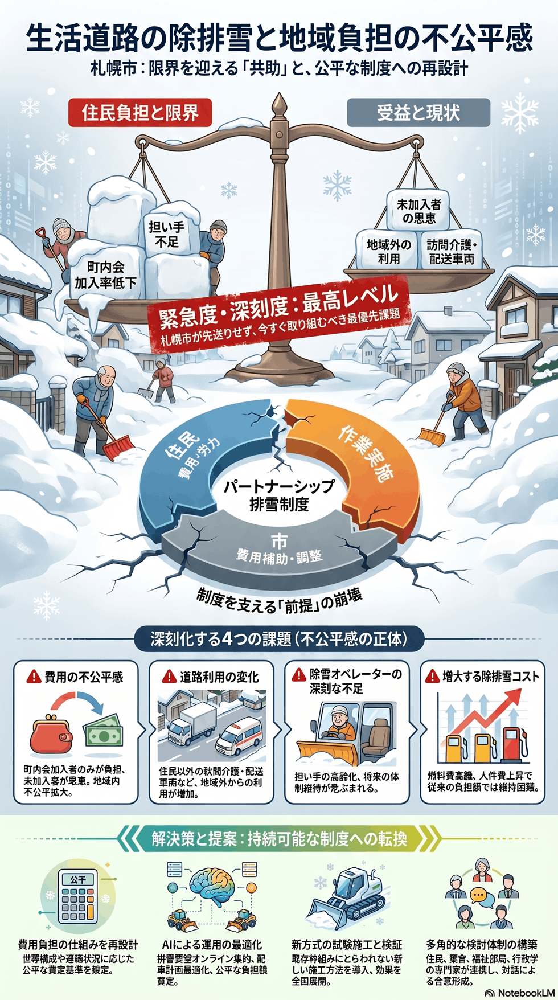

雪・寒冷地
今すぐ
生活道路の除排雪と地域負担の不公平感
地域が費用を分担するパートナーシップ排雪に負担感・不公平感が広がる。

背景
幹線道路は市が除排雪するが、生活道路の運搬排雪は住民・業者・市が費用を分担する「パートナーシップ排雪制度」に支えられている。高齢化や町内会加入率の低下で、地域がまとまって費用と労力を出す前提が崩れつつある。
事実
- 生活道路の運搬排雪は、住民・除雪業者・市の3者が費用と役割を分担するパートナーシップ排雪制度で実施されている。
- 地域の費用負担感・不公平感の増加、担い手の高齢化、在宅介護など住民以外の道路利用の増加が課題として挙げられている。
解釈
雪処理を地域コミュニティの自助に頼る仕組みは、コミュニティ自体が弱るほど機能しなくなる。負担の公平性と持続性を市の制度として作り直す必要がある。
提案
- 費用負担の仕組みの見直しと、地域差・不公平感の是正。
- 生活道路除排雪の試験施工など新方式の検証と展開。
検討体制・メンバー
札幌市建設局と各区土木センターが地域と調整している。検討会には町内会・住民代表、除雪事業者、福祉部局（高齢者世帯の事情に詳しい人材）、制度設計・行政学の専門家を入れ、負担の公平性を制度として再設計するのが望ましい。
AIノート
AIの貢献度は中。世帯構成や道路状況のデータを使った負担額の公平な算定や、排雪要望のオンライン集約・最適スケジューリングに役立つ。合意形成そのものは人の対話が中心で、AIは判断材料の提供役にとどまる。